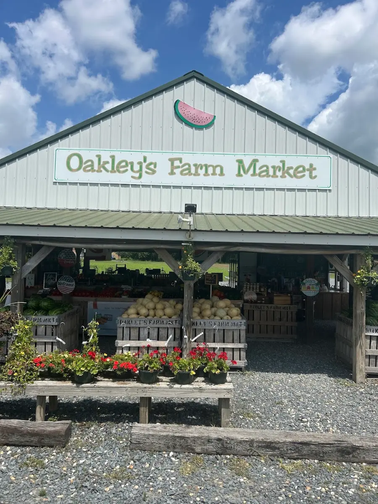
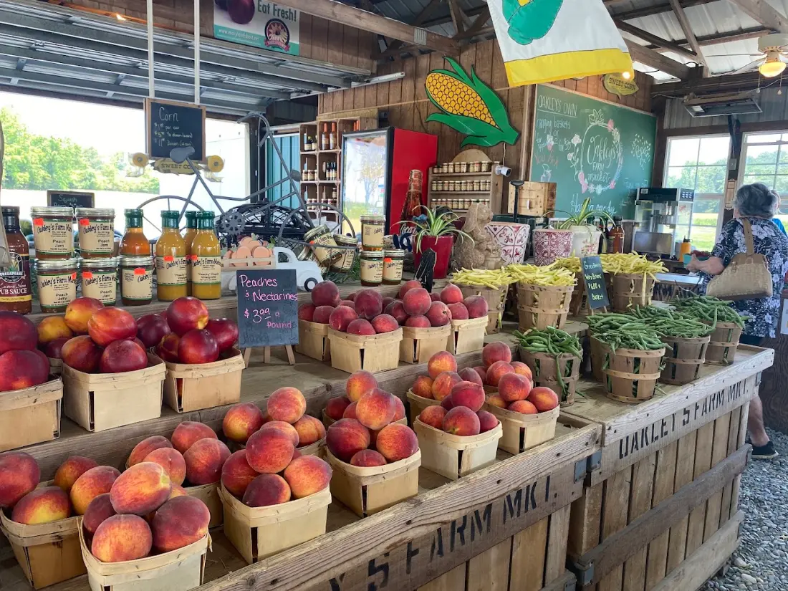
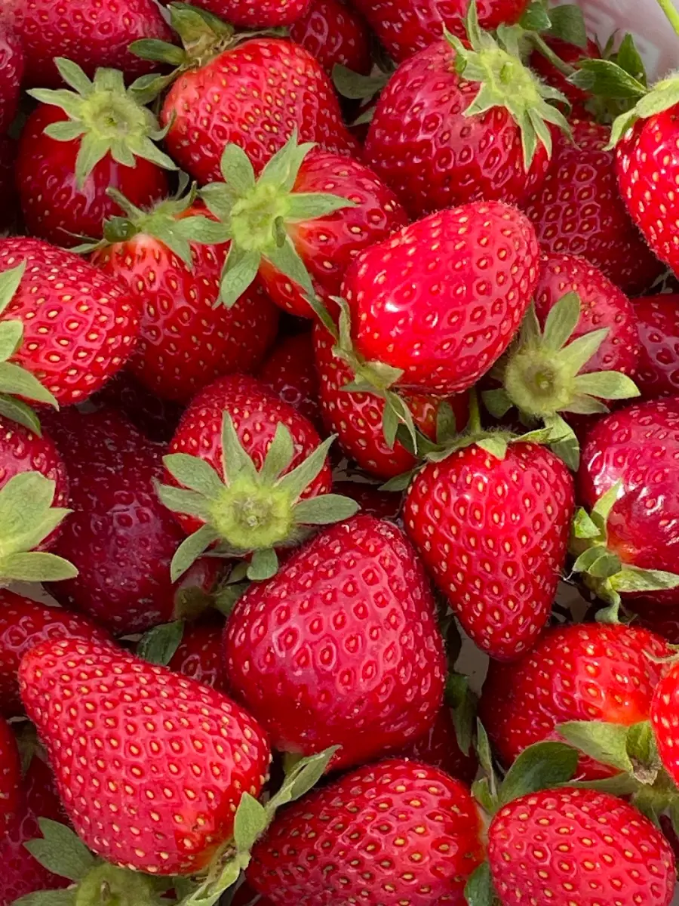
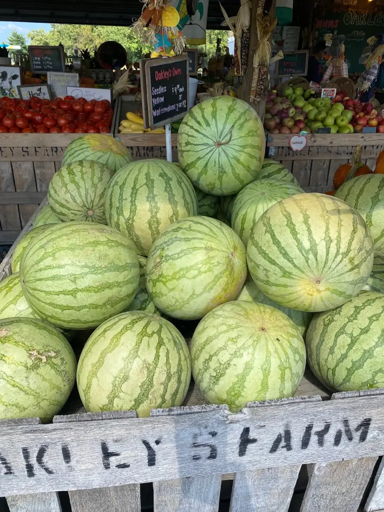
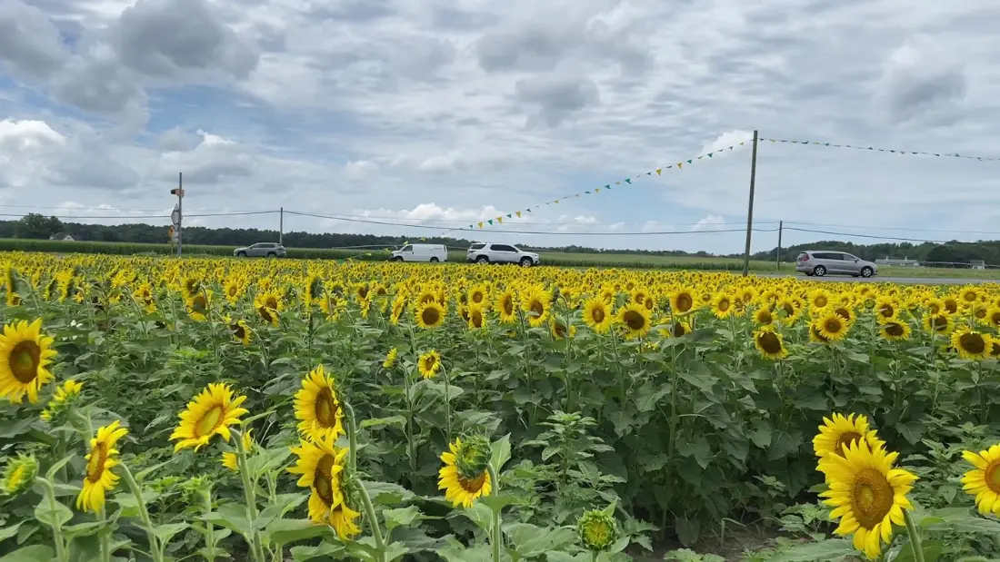

Hours below
Fresh from the farm on Route 50.
Sweet corn, watermelon, peaches and pick-your-own strawberries, plus pumpkins, hayrides and a corn maze in the fall. 4.5 stars on Google.
Call (410) 860-855327466 Ocean Gateway, Hebron, MD
Open now
Fresh from the farm on Route 50.
Sweet corn, watermelon, peaches, strawberries you pick yourself, and a fall full of pumpkins, hayrides and a corn maze. Right on the way to the beach in Hebron.
4.5from 199 Google reviews
Stop on your way27466 Ocean Gateway, Hebron
What's fresh, season by season
The stand is open from late April through October. Call ahead to see what's in today.
Spring
- Pick-your-own strawberries
- Hanging baskets
Summer
- Sweet corn
- Watermelon and cantaloupe
- Peaches and nectarines
- Fresh vegetables
Fall
- Pumpkin patch: pick your own or grab one ready to go
- Corn maze
- Hayrides
- Playground for the kids
All year
- Custom lumber sales at the farm
- Call for details
From the farm stand
A few photos from our Google listing.




Bring the whole crew
Fall at Oakley's means picking a pumpkin straight from the field, a hayride, a corn maze and a playground to keep the kids busy. Planning a group or school trip? Give us a call first.
Call (410) 860-8553What customers say
From our Google reviews.
★★★★★
Whenever I drive to the beach, Oakley’s farm market is a required stop on the way. The watermelon and sweet corn I picked up had all of my family asking me where I got it from.
★★★★★
You can pick your own pumpkin from the field or choose one they already harvested. Lots of other produce and goods too, we always have fun.
★★★★★
Recently took a field trip of 25 kids, all had a great time! Friendly and helpful staff. Hayride. Pumpkin picking.
★★★★★
Nothing like supporting a local farmer! Everything we got was great. Try their cantaloupe and giant carrots. Delicious
Come see us
27466 Ocean Gateway (Route 50)Hebron, MD 21830
Open late April through October.
| Monday | 8:00 am – 7:00 pm |
| Tuesday | 8:00 am – 7:00 pm |
| Wednesday | 8:00 am – 7:00 pm |
| Thursday | 8:00 am – 7:00 pm |
| Friday | 8:00 am – 7:00 pm |
| Saturday | 8:00 am – 7:00 pm |
| Sunday | 8:00 am – 7:00 pm |